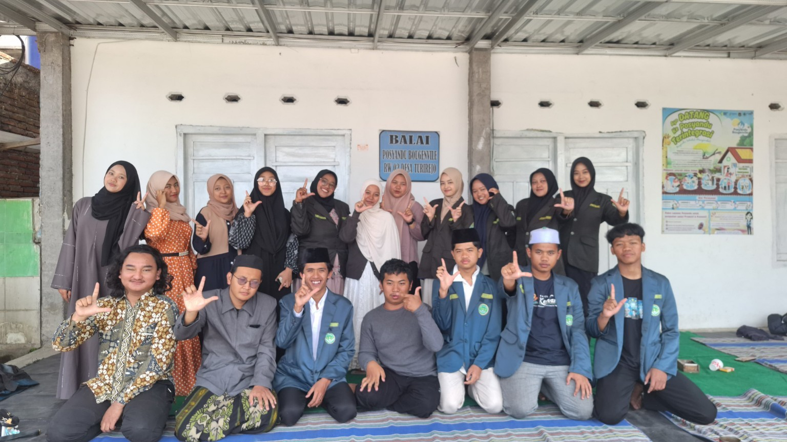
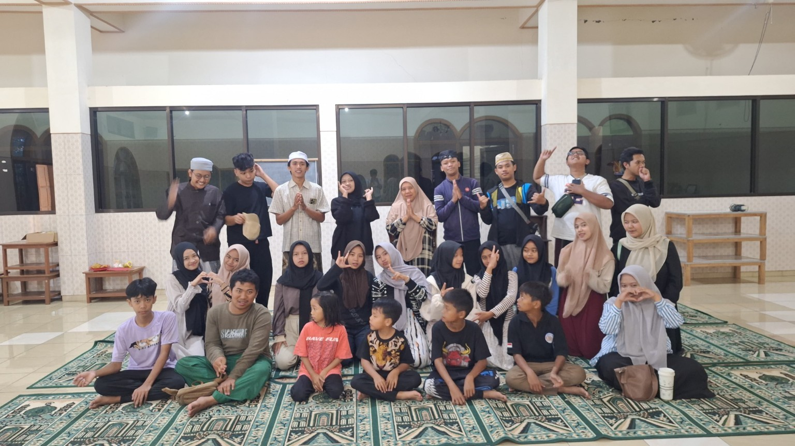
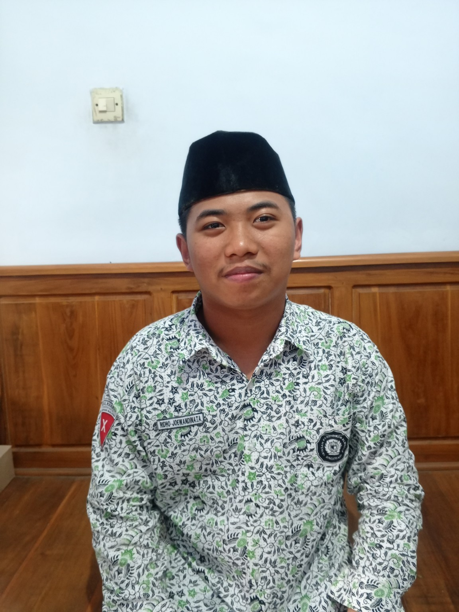

Galeri Kegiatan
Foto-foto kegiatan saya.



Media Sosial
Username: ridho joews
Pelajar kelas XI yang aktif belajar dan mengikuti kegiatan organisasi.
Kenal Saya Lebih Dekat ↓Perkenalan singkat tentang saya.

Perkenalkan, nama saya Ridho Joewandilnata. Saya berusia 16 tahun dan lahir di Trenggalek pada 22 Januari 2010. Saat ini saya merupakan pelajar di MA Al Ma'arif Singosari.
Saat ini saya menempuh pendidikan sebagai siswa kelas XI 4.
Organisasi pelajar yang saya ikuti di lingkungan sekolah.
Organisasi yang menjadi bagian dari aktivitas organisasi saya.
Mendengarkan musik merupakan salah satu hobi saya.
Foto-foto kegiatan saya.


Username: ridho joews